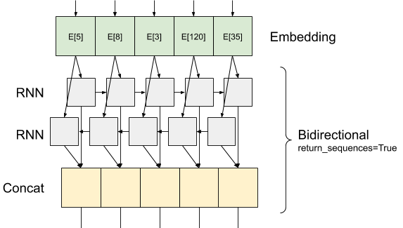

使用 RNN 做文本分类
Contents
使用 RNN 做文本分类#
文本分类任务使用 recurrent neural network 在 IMDB large movie review dataset 数据机上训练情感分类任务。
安装依赖#
先来安装需要用到的依赖包。
!pip install numpy tensorflow_datasets tensorflow -i https://pypi.tuna.tsinghua.edu.cn/simple
导入依赖#
import numpy as np
import tensorflow as tf
import tensorflow_datasets as tfds
tfds.disable_progress_bar()
导入 matplotlib 并且创建一个帮主函数来画图:
import matplotlib.pyplot as plt
def plot_graphs(history, metric):
plt.plot(history.history[metric])
plt.plot(history.history["val_" + metric], "")
plt.xlabel("Epochs")
plt.ylabel(metric)
plt.legend([metric, "val_" + metric])
创建输入 Pipeline#
IMDB 数据集是一个二分类的数据集，其中包含的评论信息有两种分类 positive 和 negative 的情感。
使用 TFDS 下载数据集. 查看 loading text tutorial 查看如何手动的家在数据。
dataset, info = tfds.load("imdb_reviews", with_info=True, as_supervised=True)
train_dataset, test_dataset = dataset["train"], dataset["test"]
train_dataset.element_spec
这会返回 dataset 中的数据 (text, label pairs):
for example, label in train_dataset.take(1):
print("text: ", example.numpy())
print("label: ", label.numpy())
接下来，把训练集数据打乱并且创建批量的 (text, label) 对:
BUFFER_SIZE = 10000
BATCH_SIZE = 64
train_dataset = (
train_dataset.shuffle(BUFFER_SIZE).batch(BATCH_SIZE).prefetch(tf.data.AUTOTUNE)
)
test_dataset = test_dataset.batch(BATCH_SIZE).prefetch(tf.data.AUTOTUNE)
for example, label in train_dataset.take(1):
print("texts: ", example.numpy()[:3])
print()
print("labels: ", label.numpy()[:3])
创建文本编码器#
在把数据输入到模型之前，我们需要先对数据进行预处理。最简单的去进行预处理的方法是使用 TextVectorization 层。
创建层并且把数据集中的文本传入到这个层，使用 .adapt 函数进行计算:
VOCAB_SIZE = 1000
encoder = tf.keras.layers.TextVectorization(max_tokens=VOCAB_SIZE)
encoder.adapt(train_dataset.map(lambda text, label: text))
.adapt 函数设置 Tokenization 层的词典，这里我们打印前20个 token。
vocab = np.array(encoder.get_vocabulary())
vocab[:20]
一旦我们有了词典，接下来就可以使用它把 tokens 转换成 indices（字典索引）。字典索引的张量会进行 padding，使用 0 把每一个 batch 中的数据补齐成最长的长度（除非设置一个固定的 output_sequence_length）。
encoded_example = encoder(example)[:3].numpy()
encoded_example
for n in range(3):
print("Original: ", example[n].numpy())
print("Round-trip: ", " ".join(vocab[encoded_example[n]]))
print()
创建模型#

上面的图片是模型的结构：
这个模型可以使用
tf.keras.Sequential进行构建。第一层是
encoder，把文本转换为字典索引的序列。在
encoder之后是一个 embedding 层。embedding 层中保存的是每一个单词的向量。一旦我们调用它，它会把这个索引序列转换为向量的序列。 这些向量是一些可以被训练的向量。通过足够数据的训练，这些向量会学习到语义的信息。RNN 网络结构能够处理上面处理过的向量序列。按照时间步骤，它能够一个个的进行处理。
tf.keras.layers.Bidirectional wrapper 也可以被使用。 它可以从反方向捕获语义信息，最终我们把正向的语义输出和反向语义输出 concatenates 到一起，得到最终的语义输出。
bidirectional RNN 的主要优势是能够捕获正向和反向的文本语义。
主要的缺点是，这样做需要同时捕获正向和反向的语义，效率很低。
在 RNN 之后，我们使用两层
layers.Dense把序列转化为一个向量，这个向量作为最终的分类 logit。
按照上述结构实现如下:
model = tf.keras.Sequential(
[
encoder,
tf.keras.layers.Embedding(
input_dim=len(encoder.get_vocabulary()),
output_dim=64,
# Use masking to handle the variable sequence lengths
mask_zero=True,
),
tf.keras.layers.Bidirectional(tf.keras.layers.LSTM(64)),
tf.keras.layers.Dense(64, activation="relu"),
tf.keras.layers.Dense(1),
]
)
请注意，这里使用的是Keras序列模型，因为模型中的所有层都只有一个输入并产生单个输出。如果您想使用有状态的RNN层，您可能希望使用Keras函数API或模型子类化构建模型，以便检索和重用RNN层状态。请查看Keras RNN指南更多细节。
嵌入层use mask以处理变化的序列长度。“嵌入”支持掩蔽后的所有层：
print([layer.supports_masking for layer in model.layers])
为了证实这一点，请对一个句子进行两次评估。首先，单独使用，这样就没有填充来屏蔽：
# predict on a sample text without padding.
sample_text = (
"The movie was cool. The animation and the graphics "
"were out of this world. I would recommend this movie."
)
predictions = model.predict(np.array([sample_text]))
print(predictions[0])
现在，用一个较长的句子在一批中再次评估它。结果应相同：
# predict on a sample text with padding
padding = "the " * 2000
predictions = model.predict(np.array([sample_text, padding]))
print(predictions[0])
编译Keras模型以配置培训过程：
model.compile(
loss=tf.keras.losses.BinaryCrossentropy(from_logits=True),
optimizer=tf.keras.optimizers.Adam(1e-4),
metrics=["accuracy"],
)
训练模型#
history = model.fit(
train_dataset, epochs=10, validation_data=test_dataset, validation_steps=30
)
test_loss, test_acc = model.evaluate(test_dataset)
print("Test Loss:", test_loss)
print("Test Accuracy:", test_acc)
plt.figure(figsize=(16, 8))
plt.subplot(1, 2, 1)
plot_graphs(history, "accuracy")
plt.ylim(None, 1)
plt.subplot(1, 2, 2)
plot_graphs(history, "loss")
plt.ylim(0, None)
在新的句子上预测:
如果预测 >= 0.0 则是 positive，否则就是 negative。
sample_text = (
"The movie was cool. The animation and the graphics "
"were out of this world. I would recommend this movie."
)
predictions = model.predict(np.array([sample_text]))
堆叠两层或者更多的 LSTM 层#
Keras递归层有两种可用模式，由 “return_sequences” 构造函数参数控制：
如果“False”，则只返回每个输入序列的最后一个输出（形状的二维张量（batch_size，output_features））。这是先前模型中使用的默认值。
如果“True”，则返回每个时间步的连续输出的完整序列（形状为“batch_size，timesteps，output_features”）的三维张量。
下面是“return_sequences=True”的信息流：

使用带有“return_sequences=True”的“RNN”的有趣之处在于，输出仍然有3个轴，就像输入一样，因此可以传递到另一个RNN层，如下所示：
model = tf.keras.Sequential(
[
encoder,
tf.keras.layers.Embedding(len(encoder.get_vocabulary()), 64, mask_zero=True),
tf.keras.layers.Bidirectional(tf.keras.layers.LSTM(64, return_sequences=True)),
tf.keras.layers.Bidirectional(tf.keras.layers.LSTM(32)),
tf.keras.layers.Dense(64, activation="relu"),
tf.keras.layers.Dropout(0.5),
tf.keras.layers.Dense(1),
]
)
model.compile(
loss=tf.keras.losses.BinaryCrossentropy(from_logits=True),
optimizer=tf.keras.optimizers.Adam(1e-4),
metrics=["accuracy"],
)
history = model.fit(
train_dataset, epochs=10, validation_data=test_dataset, validation_steps=30
)
test_loss, test_acc = model.evaluate(test_dataset)
print("Test Loss:", test_loss)
print("Test Accuracy:", test_acc)
# predict on a sample text without padding.
sample_text = (
"The movie was not good. The animation and the graphics "
"were terrible. I would not recommend this movie."
)
predictions = model.predict(np.array([sample_text]))
print(predictions)
plt.figure(figsize=(16, 6))
plt.subplot(1, 2, 1)
plot_graphs(history, "accuracy")
plt.subplot(1, 2, 2)
plot_graphs(history, "loss")
查看其他现有的递归层，例如GRU层.